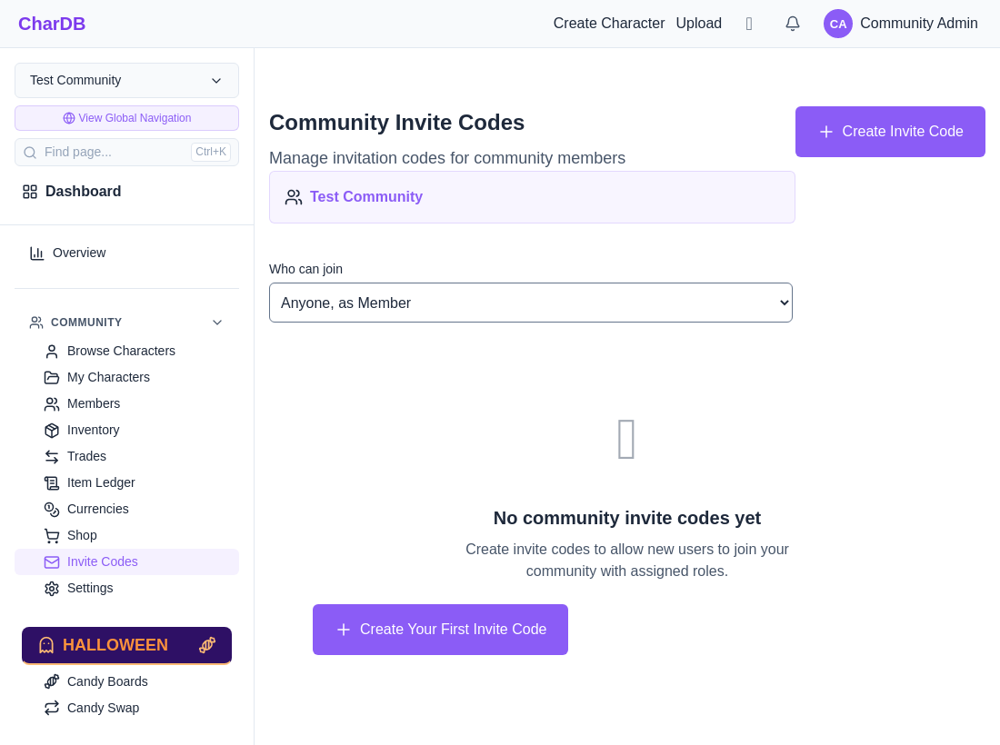
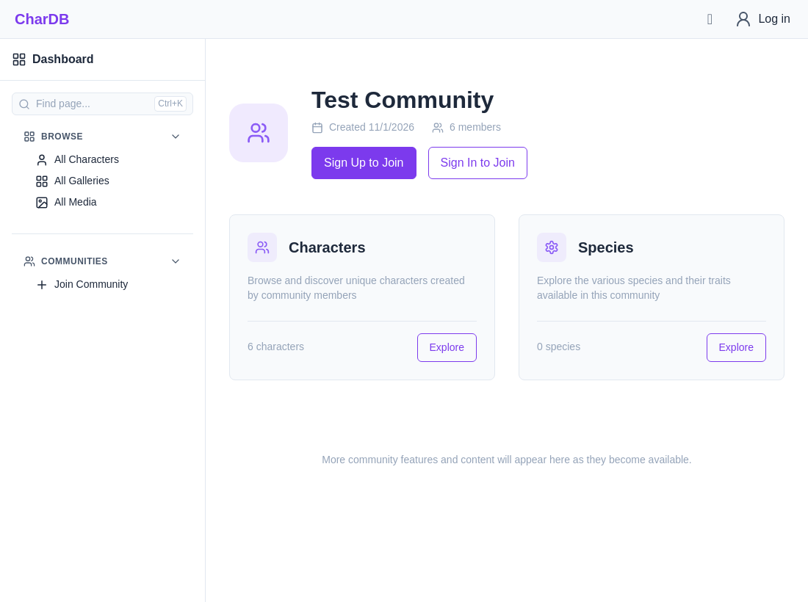
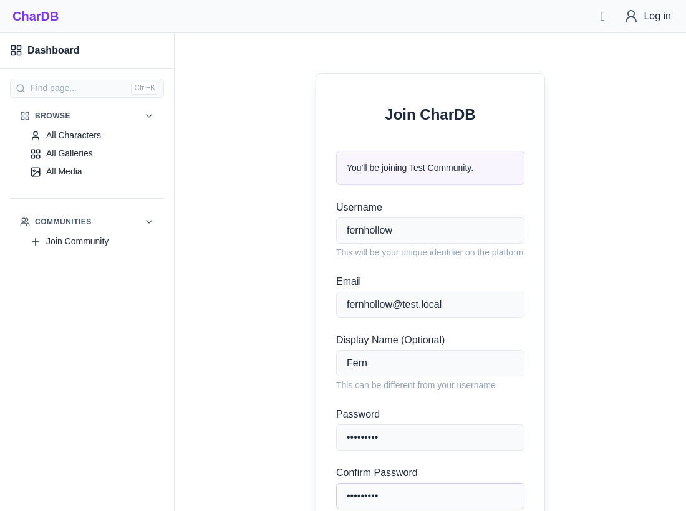
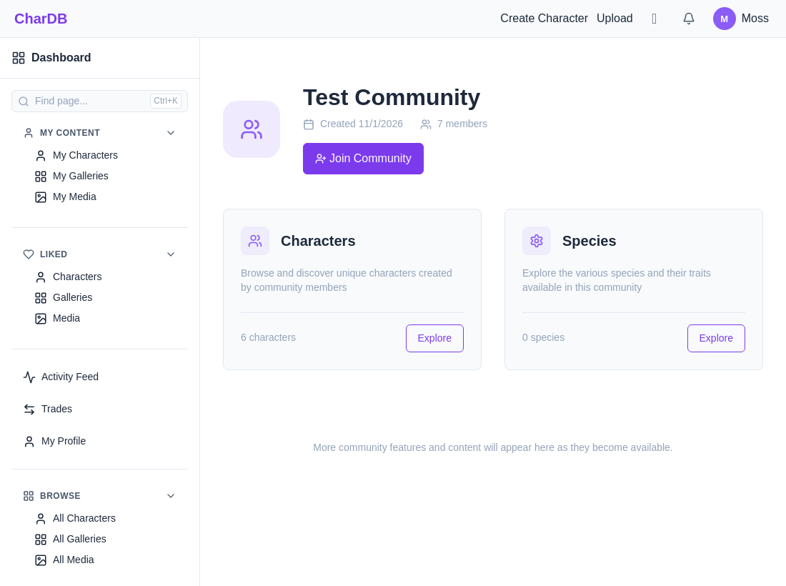
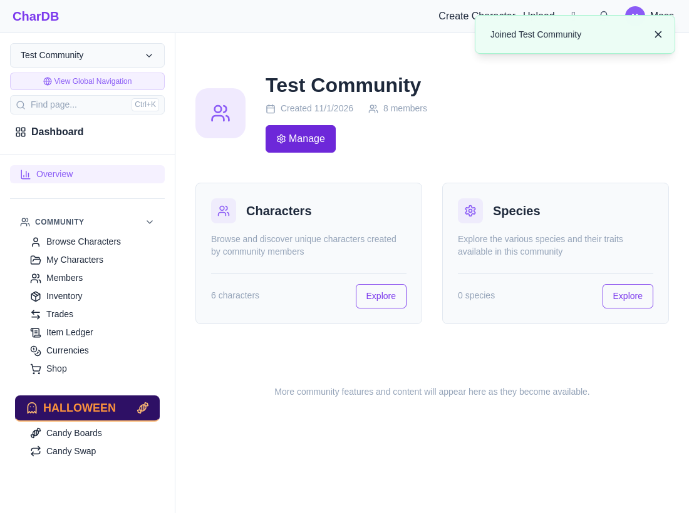

Letting anyone join a community without an invite code
Joining a community normally takes an invite code. Staff can turn that off and pick a role that everyone joins as. Newcomers then join while creating their account, and people who already have one join with a single button.
Invite codes keep working alongside it. A code still gives the role it was made for, so staff can hand out a higher role to some people while everyone else joins as the open role.
Who can join sits at the top of the community's Invite Codes page. Pick Anyone, as a role to open sign-up, or People with an invite code to close it again. The change saves as soon as it is picked.
Changing it takes the same permission as creating invite codes. Staff who can only list codes see the setting but cannot change it.

Deleting the chosen role closes sign-up rather than leaving it open with no role to give.
A signed-out visitor to an open community's page sees Sign Up to Join beside the usual Sign In button. A community that takes invites shows only Sign In to Join.

The sign-up form names the community in place of the invite code field. Submitting it creates the account and the membership together, then asks for the email address to be confirmed as usual (see Email Verification).

Following an invite link instead still asks for the code and gives the code's role.
Signed in, a person who is not a member yet sees Join Community. On an open community it joins them on the spot. On one that takes invites it goes to the page for entering a code, as before.

